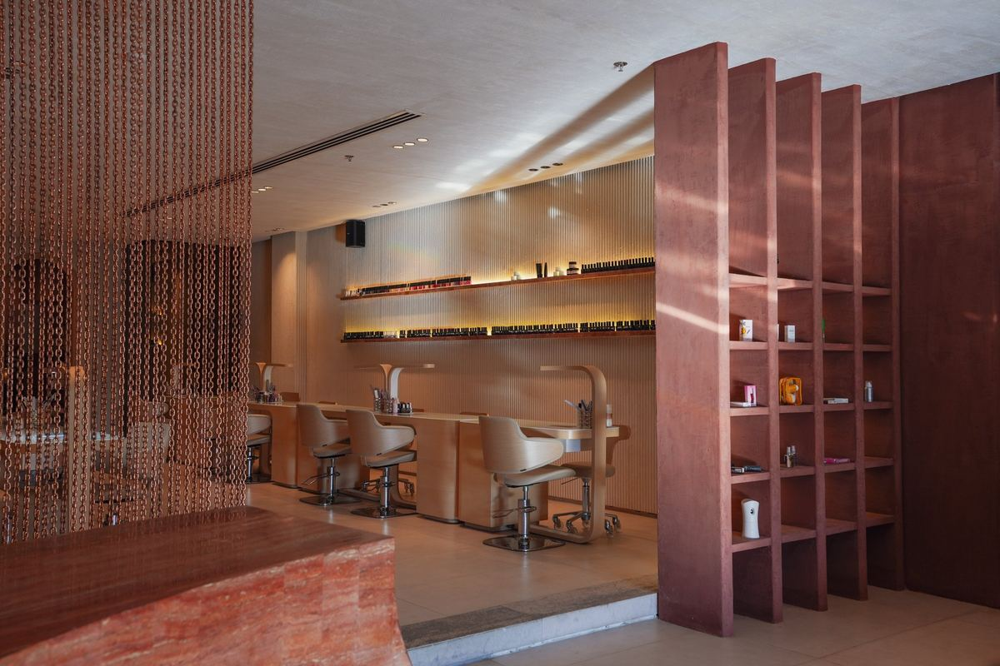
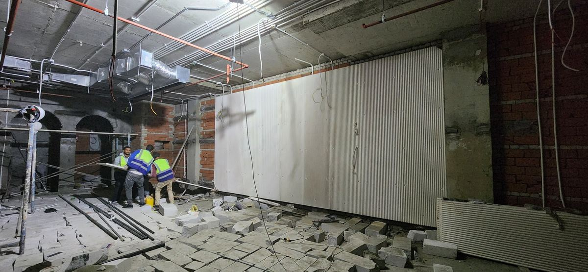
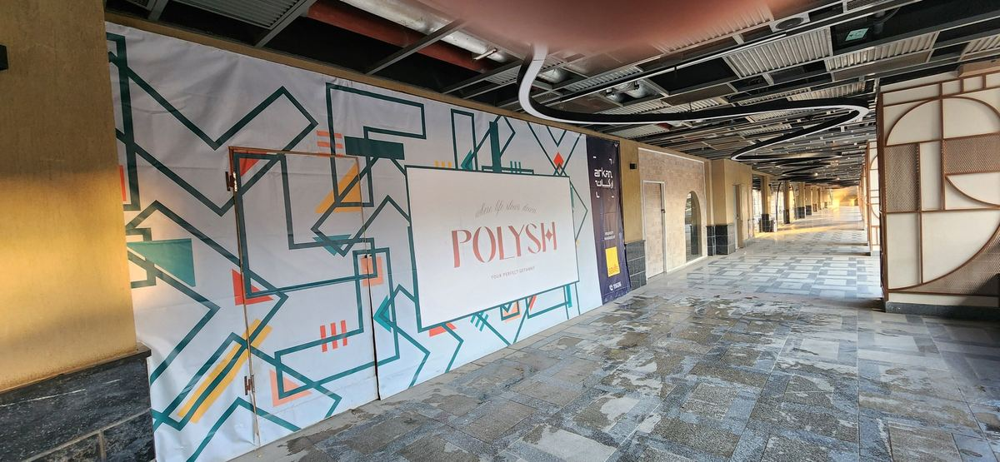
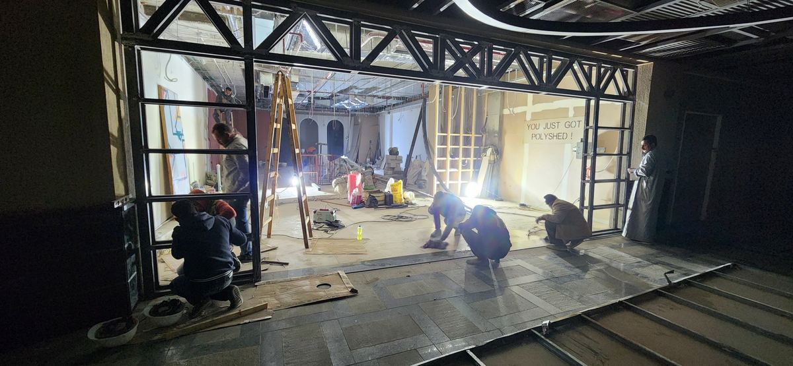
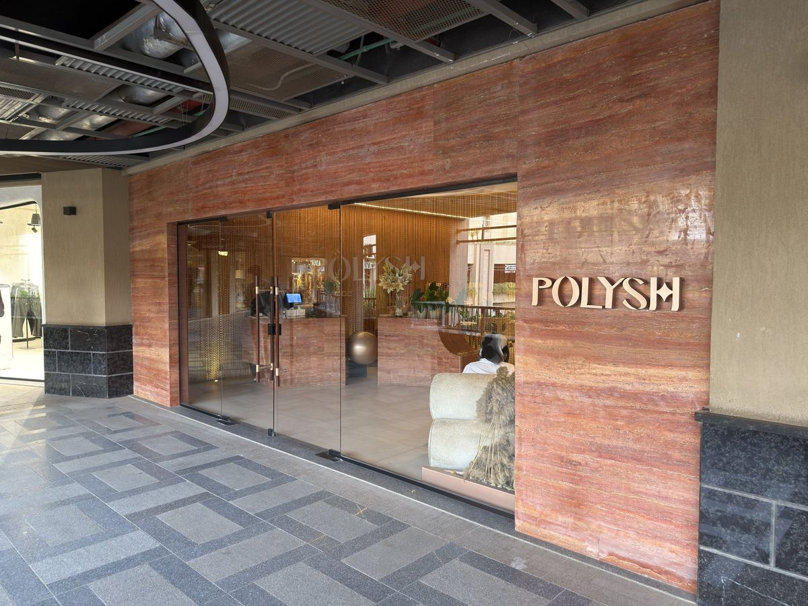
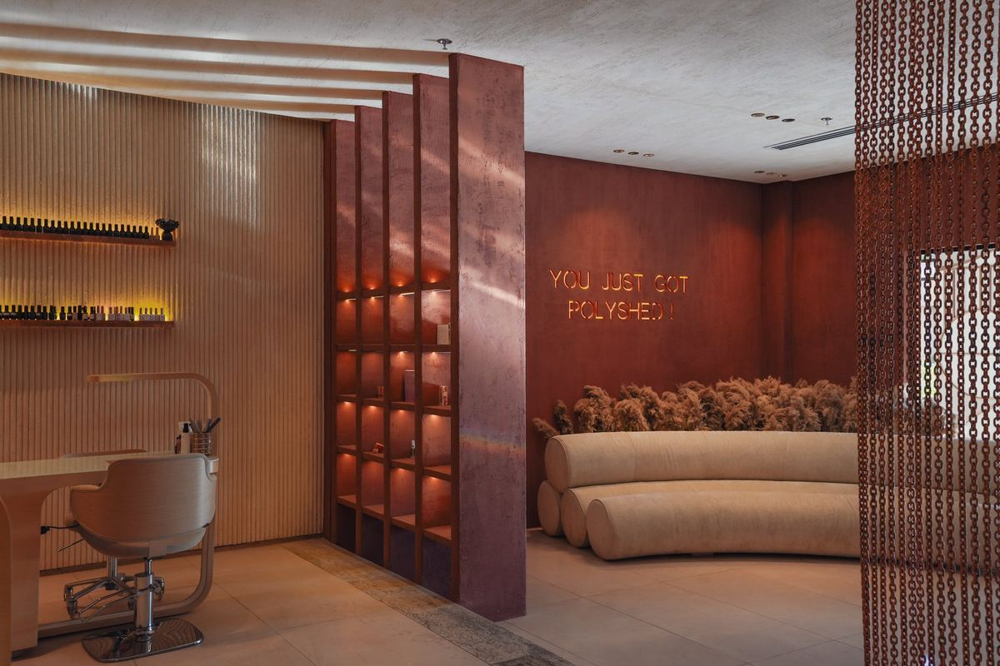
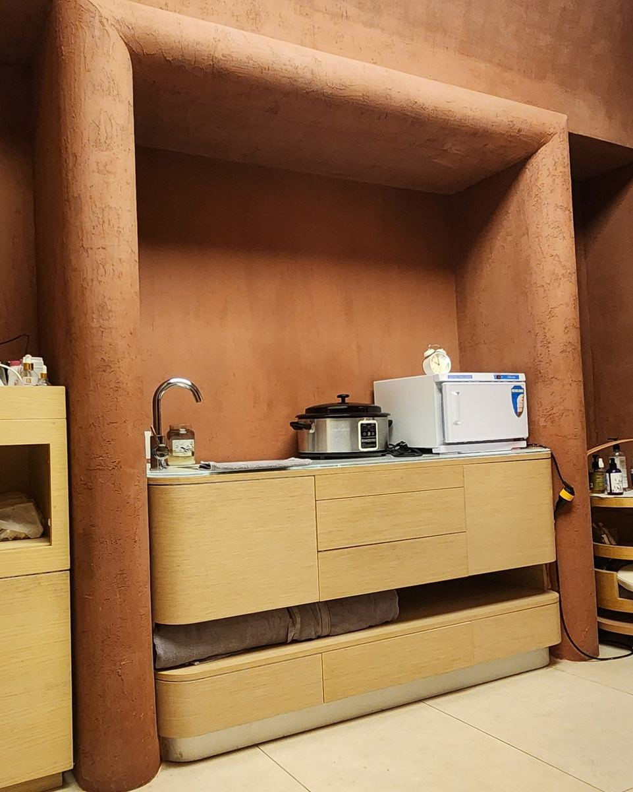
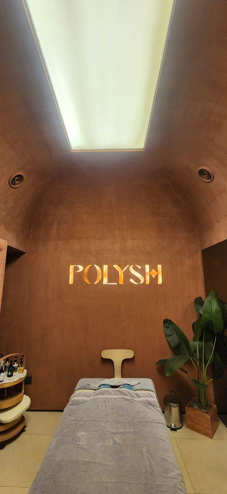
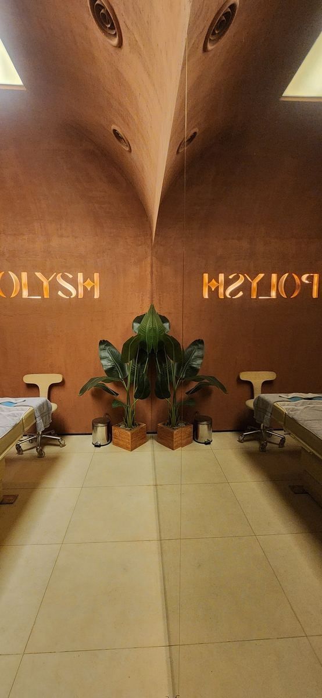

صالون أظافر · أركان، الجيزة
من الخرسانة لحد الفرش، معمول على المقاس.
شوف التصميم الثلاثي الأبعاد جنب المكان بعد التنفيذ ←
اسحب الخط وقارن.













احكيلنا عن مكانك. هنرسمه، نسعّره، ونبنيه.
كلّمنا واتسابhello@ikdu.build